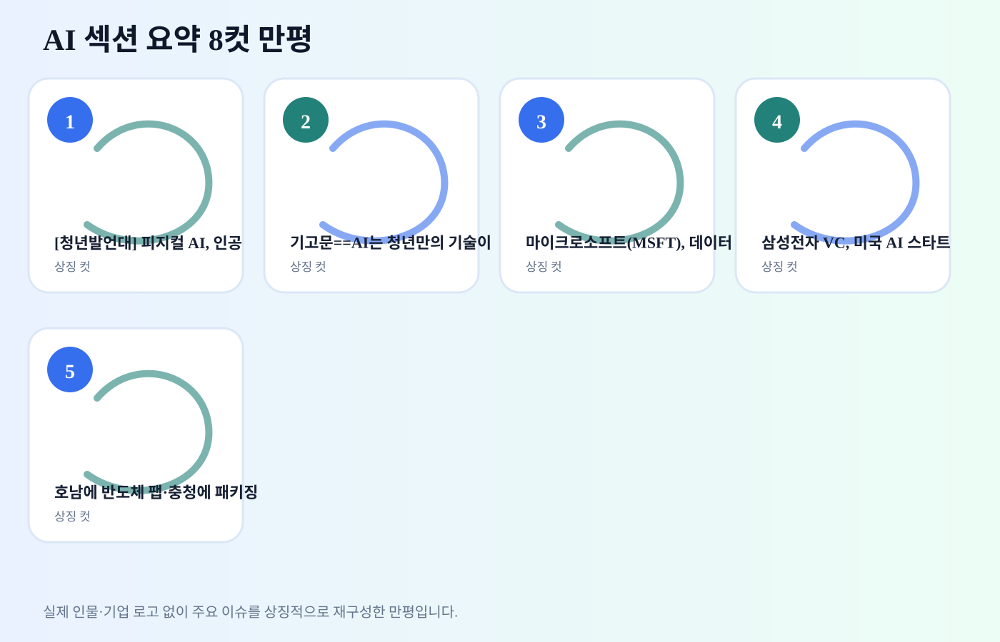
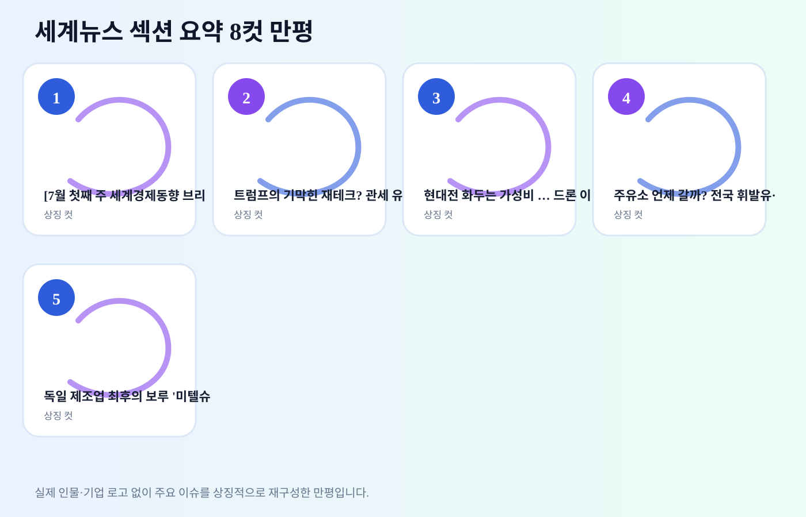
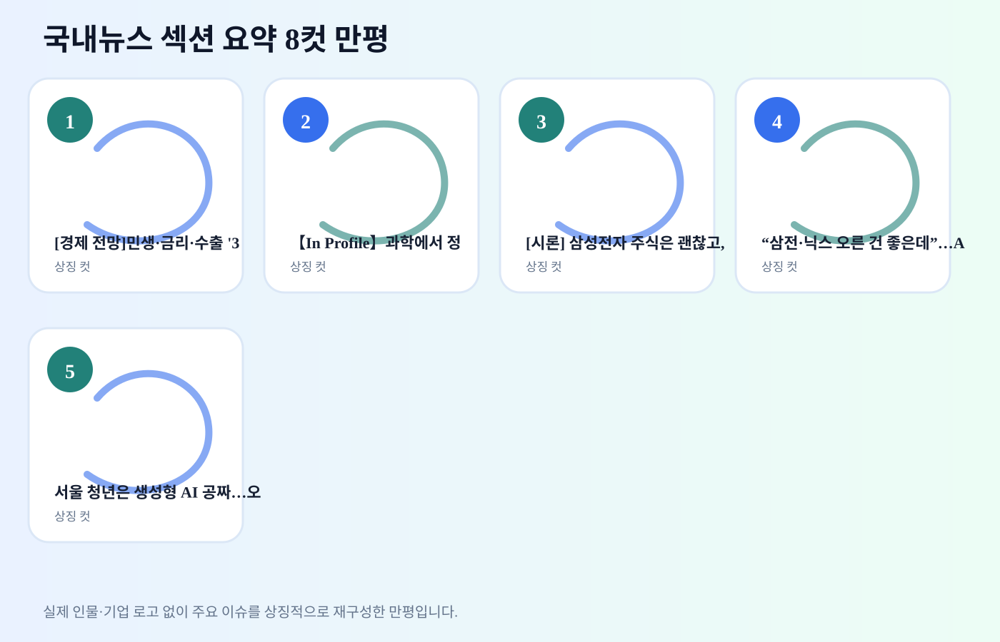

1
[청년발언대] 피지컬 AI, 인공지능이 현실 세계로 나오는 순간
내용요약 AI 기술이 실험 단계를 넘어 업무·공공·산업 현장으로 들어오는 흐름입니다. 기업들은 생산성 향상 기대와 함께 개인정보, 저작권, 보안 통제를 동시에 설계해야 합니다.
예상여파 AI 도입 기업에는 비용 절감과 서비스 품질 개선 기회가 생기지만, 내부 데이터 관리와 책임 소재가 약하면 리스크가 커집니다.
2026년 7월 4일 토요일 KST · 미국증시·AI·세계뉴스·국내뉴스
토요일 저녁 보강 발행본입니다. 전일 구조를 유지하면서 각 뉴스 바로 아래 만평 카드와 섹션 요약 8컷 만평까지 포함했습니다.
생성 시각: 2026-07-04 19:01 KST
가장 최근 완료된 정규장 기준입니다. 계산식: (기준일 종가 - 전일 종가) / 전일 종가 × 100.
| 종목 | 기준 거래일 | 종가 비교 | 등락률 | 출처 |
|---|---|---|---|---|
| LG이노텍 011070.KS | 2026-07-02 → 2026-07-03 | 874,000.00 → 872,000.00 | -0.23% | Yahoo Finance |
| 한화에어로스페이스 012450.KS | 2026-07-02 → 2026-07-03 | 1,116,000.00 → 1,175,000.00 | +5.29% | Yahoo Finance |
| 우리기술투자 041190.KQ | 2026-07-02 → 2026-07-03 | 4,690.00 → 4,855.00 | +3.52% | Yahoo Finance |
| 지수 | 전일 종가 → 기준 종가 | 등락률 |
|---|---|---|
| S&P 500 | 7,483.23 → 7,483.24 | +0.00% |
| Nasdaq | 26,040.03 → 25,832.67 | -0.80% |
| Dow | 52,305.24 → 52,900.07 | +1.14% |
| Russell 2000 | 3,012.59 → 2,996.11 | -0.55% |
| 구분 | 등락 | 해석 |
|---|---|---|
| 기술주(XLK) | -2.71% | 2026-07-02 기준 ETF 흐름 |
| 반도체(SMH) | -4.54% | 2026-07-02 기준 ETF 흐름 |
| 금융(XLF) | +1.53% | 2026-07-02 기준 ETF 흐름 |
| 에너지(XLE) | +0.78% | 2026-07-02 기준 ETF 흐름 |
| 헬스케어(XLV) | +2.63% | 2026-07-02 기준 ETF 흐름 |
| 필수소비재(XLP) | +2.03% | 2026-07-02 기준 ETF 흐름 |
| 산업재(XLI) | +0.30% | 2026-07-02 기준 ETF 흐름 |
| 종목/테마 | 맥락 | 한국장 연결 |
|---|---|---|
| AI·반도체 | 대형 기술주와 반도체 ETF 흐름이 성장주 심리를 좌우합니다. | 삼성전자·SK하이닉스·소부장 수급 확인 |
| 가상자산 | 비트코인·거래소 관련주는 위험선호 회복 여부를 보여줍니다. | 우리기술투자 등 관련주 변동성 확인 |
| 방산 | 지정학 뉴스와 미국 방산주 흐름이 수주 기대와 연결됩니다. | 한화에어로스페이스·한화시스템 등 확인 |
투자권유 아님 / 참고용 아이디어입니다.
연결 이유: AI 데이터센터 확산은 전력기기, 냉각, 통신 인프라 수요로 이어집니다.
체크: 전력망 투자, 데이터센터 인허가, 클라우드 증설 뉴스
연결 이유: AI 모델 고도화와 기기 내 AI 기능 확산은 메모리·패키징·부품 밸류체인에 연결됩니다.
체크: 미국 반도체 ETF, 애플·엔비디아 뉴스, 외국인 수급
연결 이유: 공공기관과 기업 내부 지식검색 도입이 늘면 보안형 LLM·업무 자동화 수요가 커집니다.
체크: SI/소프트웨어 수주, 보안 인증, 공공 예산
Yahoo Finance Chart API, Google News RSS, 기사별 원문 링크. 자동 수집 자료는 발행 시각과 매체 표기를 함께 확인했습니다.
내용요약 AI 기술이 실험 단계를 넘어 업무·공공·산업 현장으로 들어오는 흐름입니다. 기업들은 생산성 향상 기대와 함께 개인정보, 저작권, 보안 통제를 동시에 설계해야 합니다.
예상여파 AI 도입 기업에는 비용 절감과 서비스 품질 개선 기회가 생기지만, 내부 데이터 관리와 책임 소재가 약하면 리스크가 커집니다.
[청년발언대] 피지컬 AI, 인공지능이 현실 세계로 나오는 순간
AI라는 새 엔진 앞에서 규제, 투자, 인프라가 각자 다른 계기판을 들여다봅니다.
내용요약 AI 기술이 실험 단계를 넘어 업무·공공·산업 현장으로 들어오는 흐름입니다. 기업들은 생산성 향상 기대와 함께 개인정보, 저작권, 보안 통제를 동시에 설계해야 합니다.
예상여파 AI 도입 기업에는 비용 절감과 서비스 품질 개선 기회가 생기지만, 내부 데이터 관리와 책임 소재가 약하면 리스크가 커집니다.
기고문==AI는 청년만의 기술이 아니다, 중장년의 새로운 경쟁력이다.
AI라는 새 엔진 앞에서 규제, 투자, 인프라가 각자 다른 계기판을 들여다봅니다.
내용요약 AI 수요가 데이터센터와 반도체, 전력 인프라 투자로 번지는 흐름입니다. 생성형 AI 서비스 확산은 결국 연산 자원, 냉각, 전력망, 고성능 메모리 수요를 동시에 끌어올립니다.
예상여파 반도체·전력기기·냉각·클라우드 관련 기업에는 중장기 수요 기대가 생깁니다. 다만 실제 투자 확정, 전력 공급 계획, 수익성 검증이 뒤따라야 테마가 실적으로 이어집니다.
마이크로소프트(MSFT), 데이터센터 공사 중단...AI 랠리 효과 종료 경고등
AI라는 새 엔진 앞에서 규제, 투자, 인프라가 각자 다른 계기판을 들여다봅니다.
내용요약 AI 스타트업 투자와 전략적 제휴가 이어지며 대기업의 미래 밸류체인 선점 경쟁이 뚜렷해지고 있습니다. 단순 재무투자보다 기술 내재화와 파트너 생태계 확보 성격이 강합니다.
예상여파 온디바이스 AI, 업무 자동화, 산업별 AI 솔루션 기업에 관심이 이어질 수 있습니다. 투자 뉴스는 후속 고객 확보와 제품화 속도를 함께 확인해야 합니다.
삼성전자 VC, 미국 AI 스타트업 옥스믹 투자 주도 |
AI라는 새 엔진 앞에서 규제, 투자, 인프라가 각자 다른 계기판을 들여다봅니다.
내용요약 AI 수요가 데이터센터와 반도체, 전력 인프라 투자로 번지는 흐름입니다. 생성형 AI 서비스 확산은 결국 연산 자원, 냉각, 전력망, 고성능 메모리 수요를 동시에 끌어올립니다.
예상여파 반도체·전력기기·냉각·클라우드 관련 기업에는 중장기 수요 기대가 생깁니다. 다만 실제 투자 확정, 전력 공급 계획, 수익성 검증이 뒤따라야 테마가 실적으로 이어집니다.
호남에 반도체 팹·충청에 패키징 … 영남엔 피지컬AI·데이터센터
AI라는 새 엔진 앞에서 규제, 투자, 인프라가 각자 다른 계기판을 들여다봅니다.
AI 이슈를 규제, 도입, 투자, 인프라 흐름으로 재구성했습니다.

내용요약 국제 뉴스는 경기, 에너지, 공급망, 외교 리스크가 복합적으로 얽혀 움직이고 있습니다. 단일 사건보다 후속 정책 대응과 시장 가격 반응을 함께 보는 것이 중요합니다.
예상여파 국내 기업에는 환율·원자재·수출 수요 경로로 영향이 나타날 수 있습니다. 주말 이후 첫 거래일에는 관련 섹터의 갭 변동을 확인해야 합니다.
[7월 첫째 주 세계경제동향 브리핑] 코스피 8,000선 초반 후퇴…美 증시는 동반 상승
세계 뉴스의 파문이 지도 위를 지나 환율, 에너지, 공급망의 물결로 번집니다.
내용요약 미국 정치·정책 변수는 글로벌 금융시장과 공급망 심리에 직접 연결됩니다. 휴일 전후 발언과 정책 방향은 금리, 달러, 위험자산 흐름을 흔들 수 있습니다.
예상여파 한국 증시는 환율과 외국인 수급을 통해 영향을 받을 수 있습니다. 수출주와 성장주는 미국 정책 신호에 민감하게 반응할 가능성이 있습니다.
트럼프의 기막힌 재테크? 관세 유예 전날 우량주 쓸어담았다
세계 뉴스의 파문이 지도 위를 지나 환율, 에너지, 공급망의 물결로 번집니다.
내용요약 국제 뉴스는 경기, 에너지, 공급망, 외교 리스크가 복합적으로 얽혀 움직이고 있습니다. 단일 사건보다 후속 정책 대응과 시장 가격 반응을 함께 보는 것이 중요합니다.
예상여파 국내 기업에는 환율·원자재·수출 수요 경로로 영향이 나타날 수 있습니다. 주말 이후 첫 거래일에는 관련 섹터의 갭 변동을 확인해야 합니다.
현대전 화두는 가성비 … 드론 이어 주목받는다는 K무기는
세계 뉴스의 파문이 지도 위를 지나 환율, 에너지, 공급망의 물결로 번집니다.
내용요약 국제 뉴스는 경기, 에너지, 공급망, 외교 리스크가 복합적으로 얽혀 움직이고 있습니다. 단일 사건보다 후속 정책 대응과 시장 가격 반응을 함께 보는 것이 중요합니다.
예상여파 국내 기업에는 환율·원자재·수출 수요 경로로 영향이 나타날 수 있습니다. 주말 이후 첫 거래일에는 관련 섹터의 갭 변동을 확인해야 합니다.
주유소 언제 갈까? 전국 휘발유·경유 가격 7주 연속 하락세
세계 뉴스의 파문이 지도 위를 지나 환율, 에너지, 공급망의 물결로 번집니다.
내용요약 국제 뉴스는 경기, 에너지, 공급망, 외교 리스크가 복합적으로 얽혀 움직이고 있습니다. 단일 사건보다 후속 정책 대응과 시장 가격 반응을 함께 보는 것이 중요합니다.
예상여파 국내 기업에는 환율·원자재·수출 수요 경로로 영향이 나타날 수 있습니다. 주말 이후 첫 거래일에는 관련 섹터의 갭 변동을 확인해야 합니다.
독일 제조업 최후의 보루 '미텔슈탄트'마저…中 위협에 밀린다
세계 뉴스의 파문이 지도 위를 지나 환율, 에너지, 공급망의 물결로 번집니다.
세계 주요 이슈를 정책, 외교, 에너지, 공급망 흐름으로 상징화했습니다.

내용요약 산업정책과 성장 전략은 AI, 반도체, 인프라 투자 방향을 보여주는 신호입니다. 정부와 기업의 투자 우선순위가 어디로 이동하는지 확인할 필요가 있습니다.
예상여파 AI·반도체·전력망·소프트웨어 기업에는 정책 수혜 기대가 생길 수 있습니다. 다만 예산 배정과 실행 일정이 구체화되어야 실질 영향이 커집니다.
[경제 전망]민생·금리·수출 '3대 변수'…하반기 한국경제 향방 가른다
정책 종이배가 시장 강을 건너며 시민, 기업, 투자자의 표정을 바꿉니다.
내용요약 산업정책과 성장 전략은 AI, 반도체, 인프라 투자 방향을 보여주는 신호입니다. 정부와 기업의 투자 우선순위가 어디로 이동하는지 확인할 필요가 있습니다.
예상여파 AI·반도체·전력망·소프트웨어 기업에는 정책 수혜 기대가 생길 수 있습니다. 다만 예산 배정과 실행 일정이 구체화되어야 실질 영향이 커집니다.
【In Profile】과학에서 정책까지...이인선 의원의 실용 정치력
정책 종이배가 시장 강을 건너며 시민, 기업, 투자자의 표정을 바꿉니다.
내용요약 부동산 정책과 세제 논쟁은 시장 신뢰와 거래 심리에 직접 영향을 줍니다. 규제 강도보다 정책의 일관성과 예측 가능성이 가격 안정의 핵심 변수로 부각됩니다.
예상여파 건설, 은행, 리츠, 가계대출 관련 업종의 민감도가 커질 수 있습니다. 실제 법안·지침 확정 여부와 시장 거래량 변화를 함께 확인해야 합니다.
[시론] 삼성전자 주식은 괜찮고, 부동산은 안 되는가?
정책 종이배가 시장 강을 건너며 시민, 기업, 투자자의 표정을 바꿉니다.
내용요약 산업정책과 성장 전략은 AI, 반도체, 인프라 투자 방향을 보여주는 신호입니다. 정부와 기업의 투자 우선순위가 어디로 이동하는지 확인할 필요가 있습니다.
예상여파 AI·반도체·전력망·소프트웨어 기업에는 정책 수혜 기대가 생길 수 있습니다. 다만 예산 배정과 실행 일정이 구체화되어야 실질 영향이 커집니다.
“삼전·닉스 오른 건 좋은데”…AI 반도체 공매도 늘리는 ‘빅쇼트’ [머니+]
정책 종이배가 시장 강을 건너며 시민, 기업, 투자자의 표정을 바꿉니다.
내용요약 산업정책과 성장 전략은 AI, 반도체, 인프라 투자 방향을 보여주는 신호입니다. 정부와 기업의 투자 우선순위가 어디로 이동하는지 확인할 필요가 있습니다.
예상여파 AI·반도체·전력망·소프트웨어 기업에는 정책 수혜 기대가 생길 수 있습니다. 다만 예산 배정과 실행 일정이 구체화되어야 실질 영향이 커집니다.
서울 청년은 생성형 AI 공짜…오세훈 ‘AI 사다리’ 놓는다
정책 종이배가 시장 강을 건너며 시민, 기업, 투자자의 표정을 바꿉니다.
국내 주요 이슈를 정책, 시장, 시민 생활의 흐름으로 재구성했습니다.
